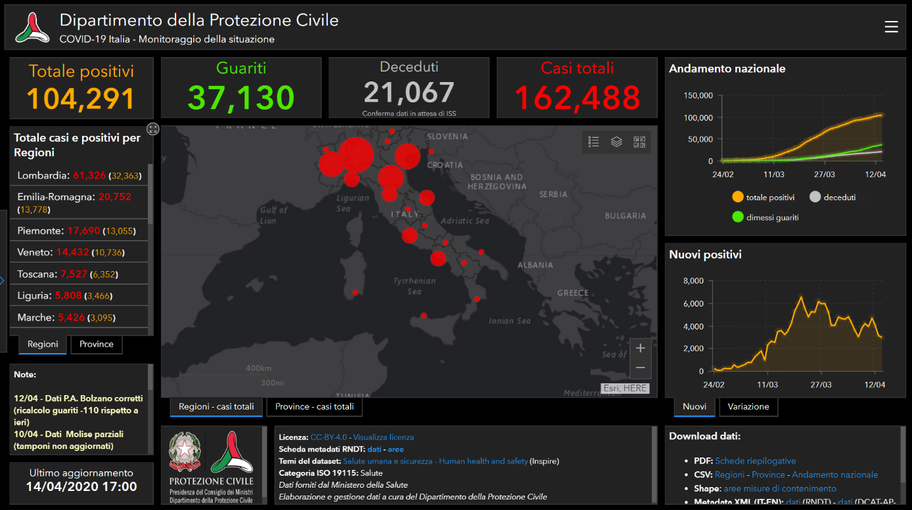
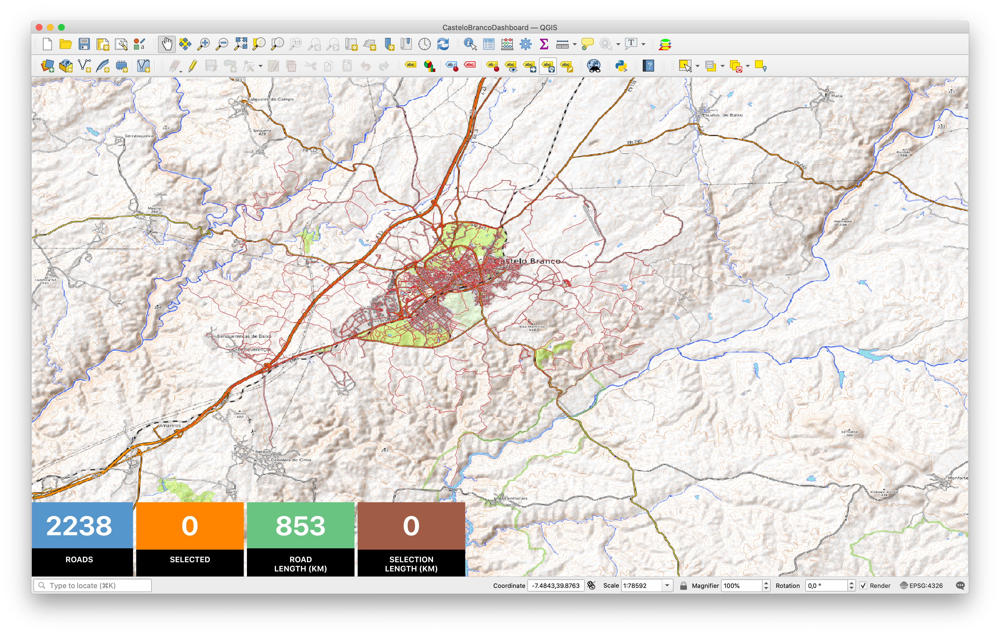
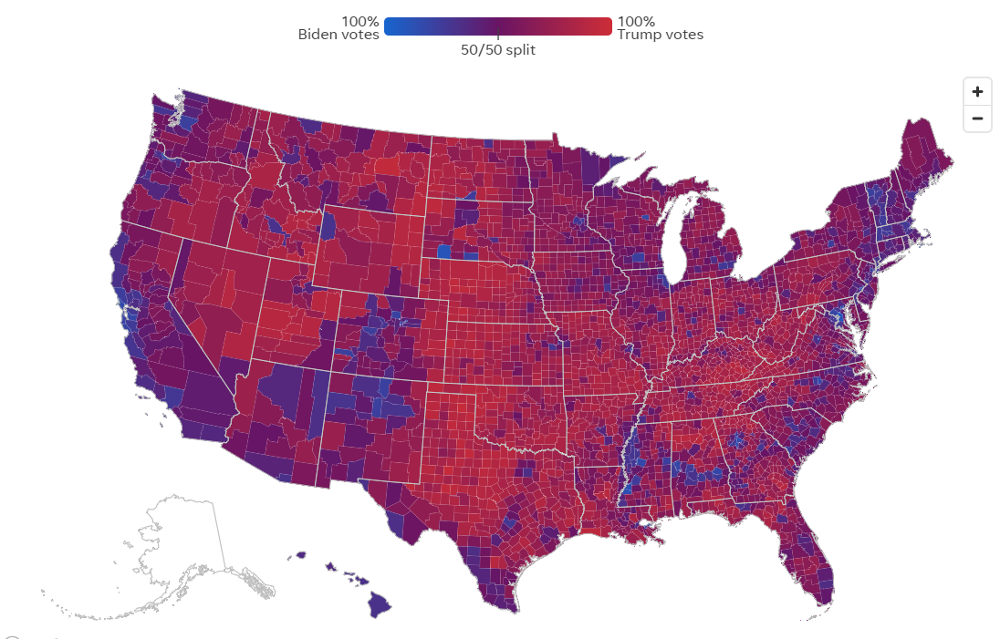
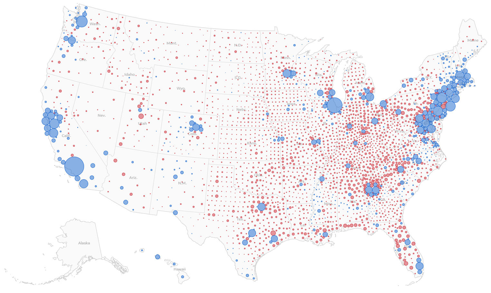
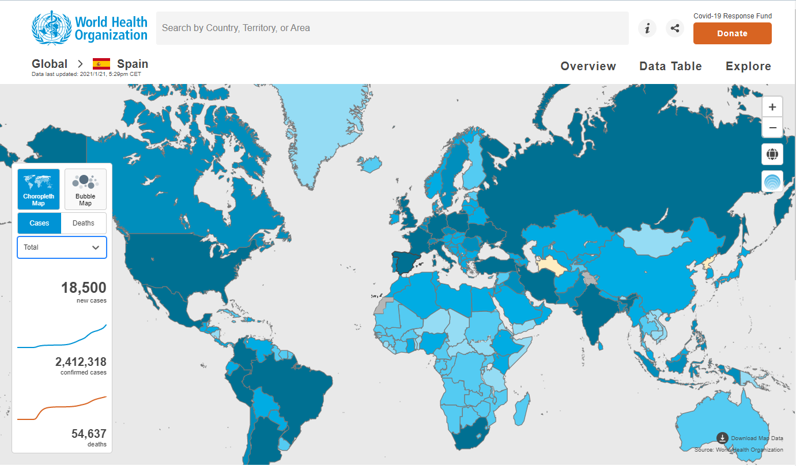

class: center, middle, inverse # ¿Qué hemos aprendido en 2020? Víctor Olaya --- class: center, middle # EL SIG tiene un valor social --- class: center, middle # Papel histórico en la salud pública # Ayuda en la coordinación de personas # Ayuda en el entendimiento de la situación, sus causas y su desarrollo. --- class: center, middle # En 2020 hemos visto más interacción de la habitual entre creadores de datos/mapas/herramientas y el público --- class: center, middle # Nos queda por aprender --- class: center, middle # No sabemos preparar datos para su procesado --- class: center, middle # No sabemos procesar datos para su consumo --- class: center, middle # Es fácil abusar de las herramientas --- class: center, middle  --- class: center, middle  --- class: center, middle # El significado de los datos es importante --- class: center, middle # Significado intrínseco de los datos --- class: center, middle # Significado de los datos para el receptor --- class: center, middle # Se puede engañar con datos --- class: center, middle # Se puede engañar con mapas --- class: center, middle  --- class: center, middle  --- class: center, middle # Se pueden hacer malos mapas --- class: center, middle  --- class: center, middle # ¿Mejor elaboración y procesado de datos o mejores consumidores? --- class: center, middle # Sobre el modelo del Software Libre --- class: center, middle, inverse # ¡Gracias! ## Víctor Olaya ## volayaf@gmail.com